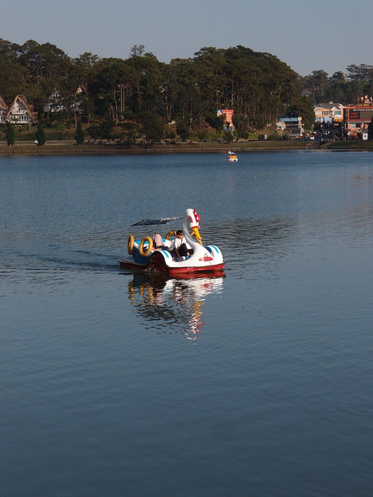
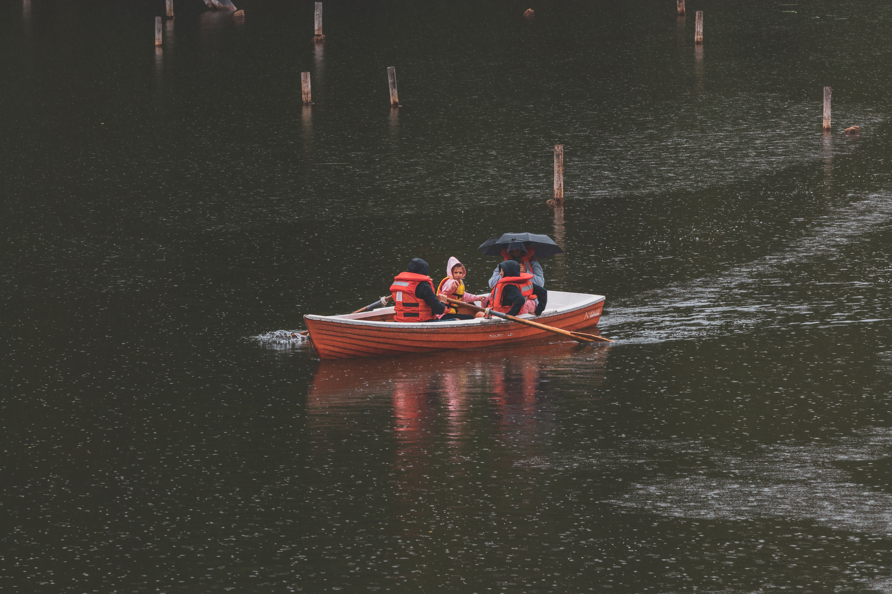
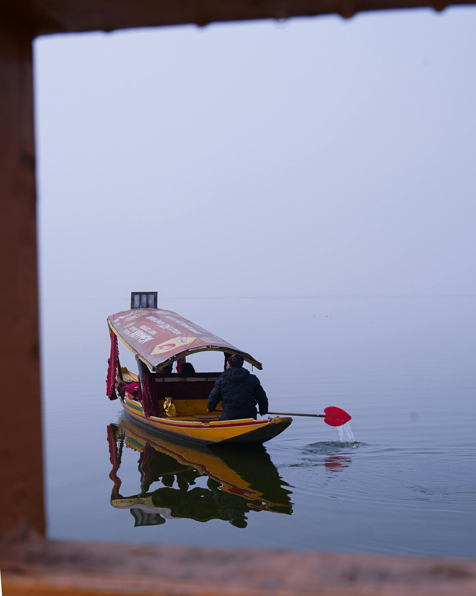

Kodaikanal · Star Lake · Boating Guide
Everything you need to know before pushing off from the jetty — boat types, ticket prices, best timings, photo spots, and the little things that make the difference between a rushed trip and a perfect hour on the water.
🕒 Updated -- minutes ago ()
Kodaikanal Lake — locally known as Kodai Lake — is a man-made, star-shaped reservoir sitting at 7,000 feet above sea level in the heart of Kodaikanal town. Spread across roughly 60 acres and ringed by pine and eucalyptus trees, it is one of the most peaceful spots in all of Tamil Nadu's hill stations. On a clear morning, the reflection of the Palani Hills on its still surface is nothing short of extraordinary.
Boating on Kodaikanal Lake has been a favourite activity for visitors since the British era — and for good reason. Whether you choose a leisurely pedal boat, a gentle row boat, or a spacious family boat, the experience of being out on the water surrounded by mist-covered hills is one you won't forget in a hurry. This guide covers everything: ticket prices, boat types, the best time to go, what to carry, common mistakes, and what the view actually looks like from the water.
Key facts at a glance — everything you need before you arrive at the lake.
Kodaikanal Lake, Kodaikanal Town, Dindigul District, Tamil Nadu — about 500 m from the Bus Stand and within walking distance of most hotels.
Open daily from 9:00 AM to 5:30 PM. Last boats are dispatched by 5:00 PM. Closed during heavy monsoon rain by lake authority discretion.
Pedal boats from ₹80/30 min. Row boats from ₹245/20 min. Kashmiri Shikara boats from ₹415 depending on size and duration. Prices subject to seasonal revision.
Standard boating slots are 30 minutes. Extended slots of 45–60 minutes may be available on request at the counter during off-peak hours.
Early morning (9–11 AM) offers the calmest water, best light for photography, and fewest crowds. Weekdays are significantly quieter than weekends. Avoid peak tourist season Saturdays when queues can stretch to 45 minutes.
Three main categories of boats operate on Kodaikanal Lake, each suited to a different kind of visitor. Here's what you need to know about each one before buying your ticket.

The active, breezy choice

The classic lake experience

Spacious and comfortable
Buying a boating ticket at Kodaikanal Lake is straightforward, but a few small things can save you time and hassle. Follow these steps for a smooth experience.
The TTDC (Tamil Nadu Tourism Development Corporation) boating counter has two houses, house 1 and house 2 (google map) located at the main lake entrance near Club Road. Look for the blue-and-white signboard. Arrive by 9:15 AM on weekends to avoid queues.
Decide between pedal boat, row boat, or shikara boat. Tell the counter staff your choice. If a specific boat type is unavailable, you'll be given a token number and a wait time — typically 10–20 minutes.
Pay in cash at the counter — card payments are not available at most boat counters. Keep your ticket safely; you'll hand it to the jetty attendant when boarding. No receipt means no boat.
Proceed to the designated jetty area. Life jackets are provided — wearing them is mandatory. Children under 12 must be accompanied by an adult and must wear a life jacket at all times.
Hand your ticket to the jetty staff, board carefully using the provided steps, and wait for the attendant's signal before departing. A 30-minute timer begins when you leave the jetty. Return on time to avoid extra charges.
The time of day makes a dramatic difference to the boating experience at Kodaikanal Lake. Here's how each window plays out across the day.
The absolute best window. The lake is glassy and still, mist lingers on the hills, light is soft and golden. Crowd levels are low on weekdays. Ideal for photographers and couples who want a peaceful experience.
The busiest window, especially on weekends. Queues can be long, light is harsh, and the lake sees the most boat traffic. If this is your only window, arrive right at noon before lunch-hour crowds swell.
A beautiful second window. Crowds thin noticeably after 4 PM. The low sun turns the western hills amber and the reflections on the lake are stunning. Last boats depart at 5:00 PM — arrive no later than 4:30 PM.
Most visitors are surprised by how different the lake looks from the water versus the shore. Here's what you'll actually see and experience once you're out on the lake.
The full Palani Hills ridgeline is visible in every direction. To the north, pine forests slope down to the waterline. To the south, you can see the rooftops of Kodaikanal town and the white spire of Sacred Heart Church. On clear days, the view stretches to distant valley layers.
The centre of the lake offers unobstructed 360° shots. The best photography window is 9–10 AM when reflections are sharpest. Point your camera east in the morning and west in the evening. The star-shaped shoreline makes for excellent drone shots if permits are obtained in advance.
Weekday mornings are Low. Weekend afternoons are Very High. Long weekends and school holidays (April–June, October) are Peak. Monday and Tuesday mornings are the quietest days of the week.
The lake is generally calm year-round at this altitude. However, sudden mist and light rain can reduce visibility. In the monsoon months (July–September), boating may be suspended on days with heavy rainfall or strong winds at the lake authority's discretion.
The lake sits at the centre of Kodaikanal town, making it easy to combine your boating trip with visits to other highlights within a short walk or drive.
| Attraction | Distance from Lake | Time Required | Best For |
|---|---|---|---|
| Bryant Park | 0.4 km — 5-min walk | 45–60 min | Botanical garden, flowers, families |
| Coaker's Walk | 1.2 km — 15-min walk | 30–45 min | Valley views, sunrise, couples |
| Silver Cascade Falls | 8 km — 20-min drive | 30 min | Waterfall, scenic roadside stop |
| Pillar Rocks | 7 km — 18-min drive | 45 min | Rock formations, views, photography |
| Dolphin's Nose | 8 km — 20-min drive | 1–2 hours | Trek, panoramic views, sunrise |
| Bear Shola Falls | 2.5 km — 10-min drive | 30 min | Short nature walk, seasonal waterfall |
Set your alarm a little earlier, pack your jacket, carry cash, and head down to the jetty before the day fully wakes up. Whether you pedal in slow circles near the pine-lined shore or row out to the quiet centre of the star-shaped lake with the whole of the Palani Hills reflected around you — an hour on Kodaikanal Lake is one of the simplest, most genuinely beautiful things you can do in the hills of Tamil Nadu.
Back to Top